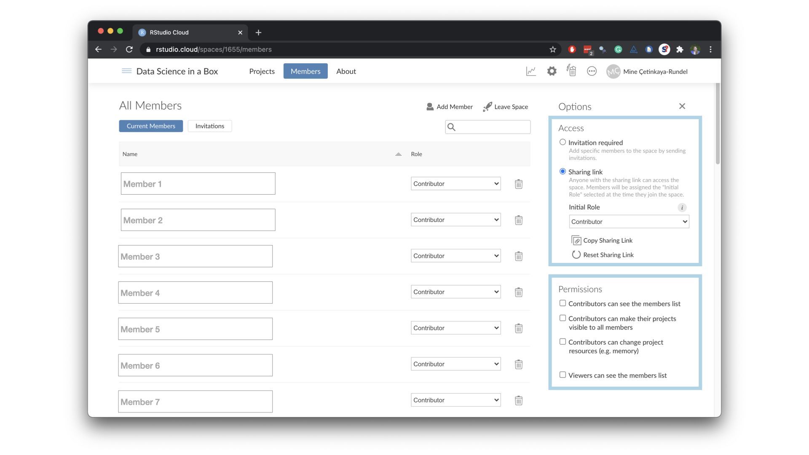

Accessing R
The RStudio IDE includes a viewable environment, a file browser, data viewer, and a plotting pane, which makes it less intimidating than the bare R shell. Additionally, since it is a full fledged IDE, it also features integrated help, syntax highlighting, and context-aware tab completion, which are all powerful tools that help flatten the learning curve.
RStudio Cloud is a managed cloud instance of the RStudio IDE. We recommend having students access RStudio via RStudio Cloud as opposed to using a local installation. The main reason for this choice is reducing friction at first exposure to R. Local installation can be difficult to manage, both for the student and the instructor, and can shift the focus away from data science learning at the beginning of the course. We discuss in further detail the reasons for avoiding local installation at the beginning of the course in Design Principles.1
When you create an account on RStudio Cloud, you get a workspace of your own, and the projects you create here can be public or private. You can also add a new workspace and control its permissions, and the projects you create here can also be public or private.
The RStudio Cloud workspace for Data Science Course in a Box project is here. You can join the workspace and play around with the application exercises.
A natural way to set up a course in RStudio Cloud is using a private workspace. In this structure a classroom (a cohort of students in one semester of the course) maps to a workspace. Once a workspace is set up, instructors can invite students to the workspace via an invite link. Workspaces allow for various permission levels which can be assigned to students, teaching assistants, and instructors. Then, each assignment/project in the course maps to an RStudio Cloud project.
Setting up your course in RStudio Cloud
First, create a new workspace on RStudio Cloud. By default, this new workspace will be a private workspace. All it takes to create a new workspace is a name and brief information for the space. You can update the information once the space is created, however you can’t change the name of the space. For the name,
I recommend using something along the lines of Course number - Semester.

Next step is to invite members to the workspace. You can do this by sending invitations or using a sharing link. I recommend using the latter approach for efficiency. Once all of your students are in the course (or once drop/add period ends) you can change the settings so that additional members cannot join throughout the semester using the sharing link, and can only be added via an invitation from the instructor.

As highlighted in the figure above, when a workspace is set to accept members via a shared link, the owner can also set a default permission level for those entering the workspace via the sharing link. Suggested permission levels and suggestions for mapping to course roles are as follows.
| RStudio Cloud role | Permissions | Course role |
|---|---|---|
| Admin | Manage users, view, edit and manage all projects | Instructor |
| Moderator | View, edit and manage all projects | Teaching Assistant |
| Contributor | Create, edit and manage their own projects | Student |
| Viewer | View projects shared with everyone | Auditor, Visitor |
This set of permissions will allow instructors full access including management of users. Teaching assistants will be able to peek into student projects, which can be very useful when helping troubleshoot. Students won’t be able to see each others’ projects. Students auditing your course or visitors, such as colleagues wanting to view/experience your course setup will have limited access.
RStudio Cloud also allows you to specify who can see the list of members. Admins and moderators can, by default, see all members of the workspace. I prefer to allow contributors (students) to see the list of members and viewers (auditors and visitors) to not since course enrollment information should not be available to non-official members of the course.
Projects
A project in RStudio Cloud is equivalent to an RStudio project. If you are an RStudio user, but you don’t use projects, I highly recommend considering switching your workflow to include projects. You can learn more about them here.

Access
When you create a new project in your workspace, it is by default visible only to you plus the admins and moderators of the space. This default has two advantages:
- It allows you to develop a project semi-privately and actively decide when the project is ready to be shared with students. This can be especially beneficial when developing an assessment like an exam.
- It means when a student creates a project in the workspace it’s not, by default, visible to other students.
When your project is ready to be shared with the students in your course, you can adjust the access level by clicking on the gear icon to reveal the settings menu. You should also check the “Make this project an assignment” box so that when a student starts their assignment RStudio Cloud automatically makes a copy of the project for them.

Base project template
If you consistently use a particular set of packages and/or need a particular set of documents to be included in each project, the base project template functionality will come in very handy. You can use this by defining a base project template for the space. Simply create a new project and add any packages or files you want projects created in the space to start with. After creating your project, select it on the Settings page as the base project template.

Note that a project must be shared with everyone in the space in order to be used as a template; only projects which are viewable by everyone in the space will appear in the templates list.
You can update your base project as many times as you want throughout the semester. The base template is applied prospectively – it only effects projects created after the template has been set. Therefore updating the base project will not break projects already created with the previous version of a base project.
Git integration
It is possible to create (clone) a new project in RStudio Cloud from a GitHub repository, just like in the RStudio IDE.

If you have a base project template set up for your workspace, this new project created from GitHub will also have the packages installed in the base project template.
For more on using Git and GitHub in the classroom, see Version Control.
Troubleshooting
I strongly recommend that you make a second account for themselves on RStudio Cloud and add that user as a contributor to the workspace to be able to see what your students see when they log in. It’s a great way to test out functionality and resolve unexpected issues your students might encounter, before they encounter them. I recommend using an incognito browser window for the student account so that you can stay logged in both as a student and as the instructor at the same time and test the student view as you develop content as an instructor.
One huge advantage of your students working in RStudio Cloud is that you as the instructor, and anyone with an admin and moderator role, can peek into student projects. While it is important for your students to learn to ask questions in a way that does not depend on someone else being able to see their work directly (and for this I strongly recommend teaching students to make reprexes), it is sometimes, especially early on, nice to be able to peek into a student’s project.
Limits
Memory & CPU
Each project on RStudio Cloud is allocated 1 GB of RAM and 1 CPU by default. While this is a pretty generous limit, actions like joining very large tables or fitting complicated models could exceed the limit.
I recommend testing out the any work you assign, especially those using large datasets, in order to avoid unexpected hiccups due to out of memory issues. One challenge is that you might have no control over what issues students might run into if they are working on an open ended project using a dataset of their own choice. In these circumstances it’s helpful to keep in the back of your mind that one way an out of memory issue can present itself is with the RStudio Cloud project crashing.
Other limits
For most up to date information on limits on free RStudio Cloud accounts, as well as any other technical details, see the RStudio Cloud Guide. This document gets updated as changes are made to the user interface and/or the backend of RStudio Cloud and should be assumed to be more current than the information outlined here.
Learn more
To see this all in action and learn more, watch the following RStudio Cloud webinars:
- Teaching R online with RStudio Cloud (July 2020)
- Teaching R online with RStudio Cloud (March 2020)
- RStudio Cloud in the Classroom
Footnotes
Note that as of August 2020 RStudio Cloud offers paid tiers as well, and you will likely need a paid subscription to teach with RStudio Cloud (unless you’re teaching a short, small course). Depending on your institution’s IT infrastructure and your class size, RStudio Cloud may or may not be the most economically feasible solution for your teaching needs. See Alternative Setups for suggestions for other setups for providing server access to RStudio for your students. Note that these alternatives generally require system infrastructure expertise or IT professional time.↩︎